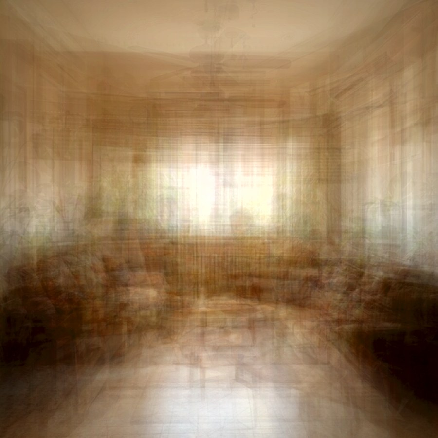
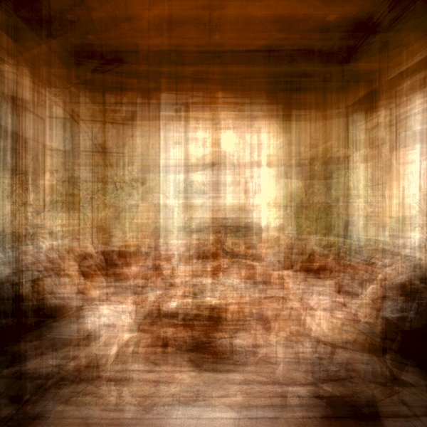

חמים
Warmn=30 / 30
לפי המכונה
בקתה צפון־אירופאית: תקרת עץ, ספה בז', אח בוערת בחצי מהתמונות, יער מאחורי החלון. אף אדם.
לפי המעצב
מאוורר תקרה, אריחים ותריס, וגם רדיאטור ב־19 מתוך 30 תמונות. בדירות ישראליות כמעט אין כאלה; ההטיה האירופאית נשארת גם כשמתארים לה את הדירה.

הערת שיטה
בניסוי הראשון כתבתי רק את המילה "ישראלי". המכונה החזירה את אותה בקתה עם אח, ו"דירה ישראלית ישנה" יצאה עם רדיאטורים ותמונה של מלאך נוצרי. רק תיאור פיזי של הדירה הזיז אותה.